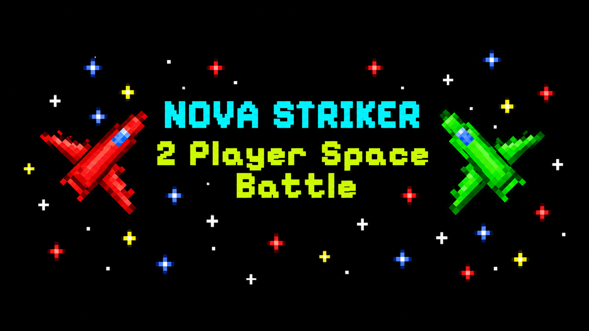

Een overzicht van de mechanics die ik heb ontwikkeld voor Nova Striker

Ik heb een GameManager gebruikt om de scores van beide spelers bij te houden. Wanneer een speler doodgaat, krijgt de tegenstander een punt. Daarna worden de posities, beweging en levens van beide spelers gereset, zodat een nieuwe ronde begint. De eerste speler met twee punten wint. Vervolgens wordt automatisch het eindscherm geladen met de winnaar en de eindscore.